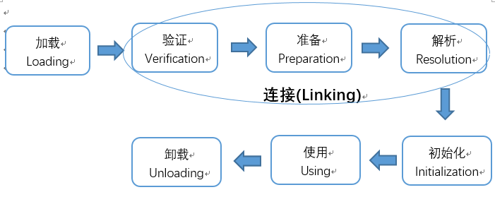
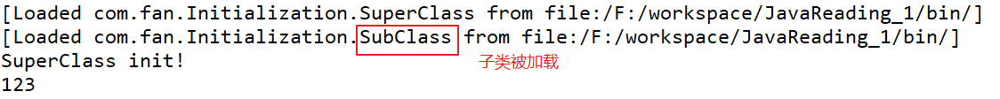
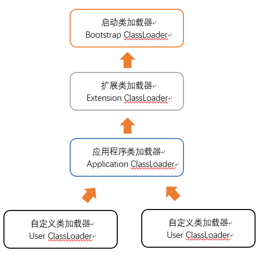
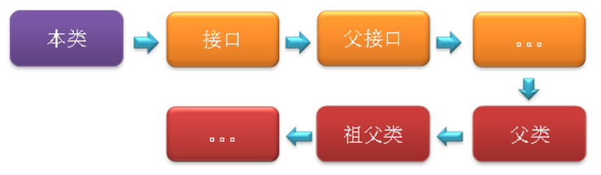
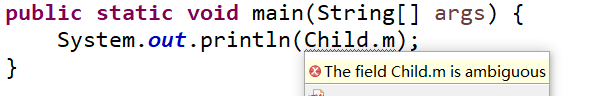

概述
本文章参考周志明的【深入理解Java虚拟机】
代码编译的结果从本地机器码转变成字节码，是存储格式发展的一小步，却是编译语言发展的一大步。
虚拟机吧描述类的数据从Class文件加载到内存，并对数据进行校验，转换解析和初始化，最终形成可以被虚拟机直接使用的java类型，这就是虚拟机的类加载机制。
在java语言中，类型的加载，连接和初始化过程都是在程序运行期间完成的。
注意： 以下所讲的Class文件并非特指某个存在于具体磁盘中的文件，应当是一串二进制的字节流。
类加载的时机
从类被加载到虚拟机内存中开始，到卸载出内存为止，类的生命周期包括加载（Loading）、验证（Verification）、准备（Preparation）、解析（Resolution）、初始化（Initialization）、使用（Using）和卸载（Unloading）7个阶段 。如下图：

其中验证、准备和解析三部分称为连接，在Java语言中，类型的加载和连接过程都是在程序运行期间完成的（Java可以动态扩展的语言特性就是依赖运行期动态加载、动态连接这个特点实现的），这样会在类加载时稍微增加一些性能开销，但是却为Java应用程序提供高度的灵活性 。
加载、验证、准备、初始化和卸载这5个阶段的顺序是固定的（即：加载阶段必须在验证阶段开始之前开始，验证阶段必须在准备阶段开始之前开始等。这些阶段都是互相交叉地混合式进行的，通常会在一个阶段的执行过程中调用或激活另一个阶段），解析阶段则不一定，在某些情况下，解析阶段有可能在初始化阶段结束后开始，以支持Java的动态绑定。
什么情况下需要开始类加载过程的加载阶段？
–Java虚拟机规范中并没有进行强制约束，这点可以交给虚拟机的具体实现来自由把握。但对于初始化阶段，虚拟机规范则是严格规定了有且只有5种情况必须立即对类进行“初始化”（而加载、验证、准备自然需要在此之前开始）：
- 遇到new（使用new关键字实例化对象）、getstatic（获取一个类的静态字段，final修饰符修饰的静态字段除外）、putstatic（设置一个类的静态字段，final修饰符修饰的静态字段除外）和invokestatic（调用一个类的静态方法）这4条字节码指令时，如果类还没有初始化，则必须首先对其初始化
- 使用java.lang.reflect包中的方法对类进行反射调用时，如果类还没有初始化，则必须首先对其初始化
- 当初始化一个类时，如果其父类还没有初始化，则必须首先初始化其父类
- 当虚拟机启动时，需要指定一个主类（main方法所在的类），虚拟机会首选初始化这个主类
- 当使用JDK1.7的动态语言支持时，如果一个java.lang.invoke.MethodHandle实例最后的解析结果REF_getStatic、REF_putStatic、REF_invokeStatic的方法句柄，并且这个方法句柄所对应的类没有进行过初始化，则需要先触发其初始化
对于这5中会触发类进行初始化的场景，虚拟机规范中使用了一个很强烈的限定语：“有且只有”，这5中场景中的行为称为对一个类进行主动引用。除此之外的方式都不会触发初始化，称为被动引用。
被动引用的示例：
1.通过子类引用父类的静态字段，不会导致子类初始化。
1 | public class SuperClasses { |
结果：
SuperClasses init!
123
对于静态字段，只有直接定义这个字段的类才会被初始化，因此通过其子类来引用父类中定义的静态字段，只有父类会被初始化，子类不会被初始化（子类的调用方式不符合5种直接引用中的任何一种）。
至于是否会触发子类的加载和验证，虚拟机规范没有明确规定，视虚拟机具体实现而定，对Hotspot虚拟机，可通过-XX:+TraceClassLoading参数看到此操作会导致子类的加载

从图中我们可以看出，子类被加载，却没有初始化。
2.通过数组定义的引用类，不会触发此类的初始化
1 | class NotInitialization { |
输出结果为空
3.常量在编译阶段会存入调用类的常量池中，本质上并没有直接引用到定义常量的类，所以不会触发定义常量的类的初始化
1 | public class ConstClass { |
输出结果：
1
在编译节阶段已将常量的值1存储到Test类的常量池中，对常量的Constant.A的引用实际上被转化为Test类对自身常量池的引用，这2个类在编译为Class文件后就没有任何关系了
注意：接口的加载过程与类加载过程不些不同，接口也有初始化的过程，虽然接口中不能使用静态代码块，但编译器仍然会为接口生成“
（）”类构造器，用于初始化接口中所定义的成员变量。
接口与类真正的区别是前面讲得5种“有且仅有”需要开始初始化中的第3中： 当一个类初始化的时候，要求父类全部都已经初始化过了，但是一个接口在初始化时，不要求父类接口全部都完成初始化，只有在真正使用到接口（如使用到父类中定义的常量）时才会初始化。
类加载的过程
详解类加载的全过程，也就是加载、验证、准备、解析和初始化这5个阶段所执行的具体动作
加载
1.通过“类全名”来获取定义此类的二进制字节流
虚拟机规范对于“通过“类全名”来获取定义此类的二进制字节流”并没有指明二进制流必须要从一个本地class文件中获取，准确地说是根本没有指明要从哪里获取及怎样获取。例如：
①.从Zip包中读取，这很常见，最终成为日后JAR、EAR、WAR格式的基础。
②.从网络获取，常见应用Applet。
③.运行时计算生成，这种场景使用的最多的就是动态代理技术，在java.lang.reflect.Proxy中，就是用ProxyGenerator.generateProxyClass来为特定接口生成$Prxoy的代理类的二进制字节流。
④.由其他格式文件生成，典型场景：JSP应用
⑤.从数据库中读取，这种场景相对少见，有些中间件服务器(如SAP Netweaver)可以选择把程序安装到数据库中来完成程序代码在集群间的分发
…………………….
2.将字节流所代表的静态存储结构转换为方法区的运行时数据结构
虚拟机规范并未规定方法区存储数据的具体数据结构，数据存储格式由虚拟机实现自行定义。
3.在内存中生成一个代表这个类的java.lang.Class对象，作为方法区这些数据的访问入口
加载阶段完成后，虚拟机外部的二进制字节流就按照虚拟机所需的格式存储在方法区之中，方法区中的数据存储格式有虚拟机实现自行定义，虚拟机并未规定此区域的具体数据结构。然后在内存中实例化一个java.lang.Class类的对象（并没有明确规定是在Java堆中，对于HotSpot虚拟机而言，Class对象比较 特殊，它虽然是个对象，但在存放在方法区里!!!），这个对象作为程序访问方法区中的这些类型数据的外部接口。
加载阶段与链接阶段的部分内容(如一部分字节码文件格式验证动作)是交叉进行的，加载阶段尚未完成，链接阶段可能已经开始，但这些夹在加载阶段之中进行的动作，仍然属于链接阶段的内容，这两个阶段的开始时间仍然保持着固定的先后顺序。
相对于类加载过程的其他阶段，加载阶段(准备地说，是加载阶段中获取类的二进制字节流的动作)是开发期可控性最强的阶段，因为加载阶段可以使用系统提供的类加载器(ClassLoader)来完成，也可以由用户自定义的类加载器完成，开发人员可以通过定义自己的类加载器去控制字节流的获取方式。
类加载器
说到加载，不得不提到类加载器，下面就具体讲述下类加载器。
虚拟机设计者把类加载阶段中的“通过一个类的全限定名来获取描述此类的二进制字节流”这个动作放到java虚拟机外部去实现，以便让应用程序自己决定如何去获取所需要的类，实现这个动作的代码模块成为“类加载器”。
类加载器虽然只用于实现类的加载动作，但它在Java程序中起到的作用却远远不限于类的加载阶段。对于任意一个类，都需要由它的类加载器和这个类本身一同确定其在就Java虚拟机中的唯一性，也就是说，即使两个类来源于同一个Class文件，只要加载它们的类加载器不同，那这两个类就必定不相等。这里的“相等”包括了代表类的Class对象的equals（）、isAssignableFrom（）、isInstance（）等方法的返回结果，也包括了使用instanceof关键字对对象所属关系的判定结果。
双亲委派模型
站在Java虚拟机的角度来讲，只存在两种不同的类加载器：
- 启动类加载器：它使用C++实现（这里仅限于Hotspot，也就是JDK1.5之后默认的虚拟机，有很多其他的虚拟机是用Java语言实现的），是虚拟机自身的一部分。
所有其他的类加载器：这些类加载器都由Java语言实现，独立于虚拟机之外，并且全部继承自抽象类java.lang.ClassLoader，这些类加载器需要由启动类加载器加载到内存中之后才能去加载其他的类。
站在Java开发人员的角度来看，类加载器可以大致划分为以下三类：
- 启动类加载器：Bootstrap ClassLoader，跟上面相同。它负责加载存放在JDK\jre\lib(JDK代表JDK的安装目录，下同)下，或被-Xbootclasspath参数指定的路径中的，并且能被虚拟机识别的类库（如rt.jar，所有的java.*开头的类均被Bootstrap ClassLoader加载）。启动类加载器是无法被Java程序直接引用的。
- 扩展类加载器：Extension ClassLoader，该加载器由sun.misc.Launcher$ExtClassLoader实现，它负责加载JDK\jre\lib\ext目录中，或者由java.ext.dirs系统变量指定的路径中的所有类库（如javax.*开头的类），开发者可以直接使用扩展类加载器。
- 应用程序类加载器：Application ClassLoader，该类加载器由sun.misc.Launcher$AppClassLoader来实现，它负责加载用户类路径（ClassPath）所指定的类，开发者可以直接使用该类加载器，如果应用程序中没有自定义过自己的类加载器，一般情况下这个就是程序中默认的类加载器。
应用程序都是由这三种类加载器互相配合进行加载的，如果有必要，我们还可以加入自定义的类加载器。这些类加载器之间的关系一般如下图所示：

上图的这种层次关系称为类加载器的双亲委派模型。我们把每一层上面的类加载器叫做当前层类加载器的父加载器，当然，它们之间的父子关系并不是通过继承关系来实现的，而是使用组合关系来复用父加载器中的代码。该模型在JDK1.2期间被引入并广泛应用于之后几乎所有的Java程序中，但它并不是一个强制性的约束模型，而是Java设计者们推荐给开发者的一种类的加载器实现方式。
双亲委派模型的工作流程是：如果一个类加载器收到了类加载的请求，它首先不会自己去尝试加载这个类，而是把请求委托给父加载器去完成，依次向上，因此，所有的类加载请求最终都应该被传递到顶层的启动类加载器中，只有当父加载器在它的搜索范围中没有找到所需的类时，即无法完成该加载，子加载器才会尝试自己去加载该类。
使用双亲委派模型来组织类加载器之间的关系，有一个很明显的好处，就是Java类随着它的类加载器（说白了，就是它所在的目录）一起具备了一种带有优先级的层次关系，这对于保证Java程序的稳定运作很重要。例如，类java.lang.Object类存放在JDK\jre\lib下的rt.jar之中，因此无论是哪个类加载器要加载此类，最终都会委派给启动类加载器进行加载，这边保证了Object类在程序中的各种类加载器中都是同一个类。
验证
验证的目的是为了确保Class文件中的字节流包含的信息符合当前虚拟机的要求，而且不会危害虚拟机自身的安全。不同的虚拟机对类验证的实现可能会有所不同，但大致都会完成以下四个阶段的验证：文件格式的验证、元数据的验证、字节码验证和符号引用验证。
- 件格式的验证：验证字节流是否符合Class文件格式的规范，并且能被当前版本的虚拟机处理，该验证的主要目的是保证输入的字节流能正确地解析并存储于方法区之内。经过该阶段的验证后，字节流才会进入内存的方法区中进行存储，后面的三个验证都是基于方法区的存储结构进行的。
- 元数据验证：对类的元数据信息进行语义校验（其实就是对类中的各数据类型进行语法校验），保证不存在不符合Java语法规范的元数据信息。
- 字节码验证：该阶段验证的主要工作是进行数据流和控制流分析，对类的方法体进行校验分析，以保证被校验的类的方法在运行时不会做出危害虚拟机安全的行为。
- 符号引用验证：这是最后一个阶段的验证，它发生在虚拟机将符号引用转化为直接引用的时候（解析阶段中发生该转化，后面会有讲解），主要是对类自身以外的信息（常量池中的各种符号引用）进行匹配性的校验。
准备
准备阶段是正式为类变量分配内存并设置类变量初始值的阶段，这些内存都将在方法区中分配。对于该阶段有以下几点需要注意：
1、这时候进行内存分配的仅包括类变量（被static修饰的变量），而不包括实例变量，实例变量会在对象实例化时随着对象一块分配在Java堆中。
2、这里所说的初始值“通常情况”下是数据类型的零值。假设一个类变量定义为:
public static int value = 12;
那么变量value在准备阶段过后的初始值为0而不是12，因为这时候尚未开始执行任何java方法，而把value赋值为123的putstatic指令是程序被编译后，存放于类构造器< clinit>()方法之中，所以把value赋值为12的动作将在初始化阶段才会被执行。
这里还需要注意如下几点：
- 对基本数据类型来说，对于类变量（static）和全局变量，如果不显式地对其赋值而直接使用，则系统会为其赋予默认的零值，而对于局部变量来说，在使用前必须显式地为其赋值，否则编译时不通过。
- 对于同时被static和final修饰的常量，必须在声明的时候就为其显式地赋值，否则编译时不通过；而只被final修饰的常量则既可以在声明时显式地为其赋值，也可以在类初始化时显式地为其赋值，总之，在使用前必须为其显式地赋值，系统不会为其赋予默认零值。
- 对于引用数据类型reference来说，如数组引用、对象引用等，如果没有对其进行显式地赋值而直接使用，系统都会为其赋予默认的零值，即null。
- 如果在数组初始化时没有对数组中的各元素赋值，那么其中的元素将根据对应的数据类型而被赋予默认的零值。
下图列出了所有基本数据类型的零值：
| 数据类型 | 零值 |
|---|---|
| int | 0 |
| long | 0L |
| short | （short）0 |
| char | ‘\u0000’ |
| byte | (byte)0 |
| boolean | false |
| float | 0.0f |
| double | 0.0d |
| reference | null |
3、初始值“通常情况”下是零值，但在“特殊情况”下：如果类字段的字段属性表中包含ConstantValue属性，那在准备阶段变量就会被初始化为ConstantValue属性所指定的值，即如果a变量定义变为public final static int a = 1;，编译时javac会为a生成ConstantValue属性，准备阶段虚拟机就会根据ConstantValue的设置将a的值置为123。
我们可以理解为static final常量在编译期就将其结果放入了调用它的类的常量池中。
解析
解析阶段是虚拟机将常量池内的符号引用特换成直接应用的过程。
a、符号引用(Symbolic References)：符号引用是一组符号来描述所引用的目标对象，符号可以是任何形式的字面量，只要使用时能无歧义地定位到目标即可。符号引用与虚拟机实现的内存布局无关，引用的目标对象并不一定已经加载到内存中。各种虚拟机实现的内存布局可以各不相同，但是它们能接受的符号引用必须都是一致的，因此符号引用的字面量形式明确定义在Java虚拟机规范的Class文件格式中。
b、直接引用(Direct References)：直接引用可以是直接指向目标对象的指针、相对偏移量或是一个能间接定位到目标的句柄。直接引用是与虚拟机内存布局实现相关的，同一个符号引用在不同虚拟机实例上翻译出来的直接引用一般不会相同，如果有了直接引用，那引用的目标必定已经在内存中存在。
问：到底是在类被加载器加载时就对常量池中的符号引用进行解析（初始化之前），还是等到一个符号引用将要被使用前才去解析它（初始化之后）？
答：虚拟机规范并没有规定解析阶段发生的具体时间，只要求了在执行anewarry、checkcast等16个用于操作符号引用的字节码指令之前，先对它们使用的符号引用进行解析，所以虚拟机实现会根据需要来判断
对同一个符号引用进行多次解析请求时很常见的事情，虚拟机实现可能会对第一次解析的结果进行缓存（在运行时常量池中记录直接引用，并把常量标示为已解析状态），从而避免解析动作重复进行。
解析动作主要针对类或接口、字段、类方法、接口方法、方法类型、方法句柄和调用点限定符七类符号引用进行，分别对应于常量池中的CONSTANT_Class_info、CONSTANT_Fieldref_info、CONSTANT_Methodref_info、CONSTANT_InterfaceMethodref_info、CONSTANT_MethodType_info、CONSTANT_MethodHandle_info、CONSTANT_InvokeDynamic_info七种常量类型。但是下面我们只讨论前四种。
1、类或接口的解析：判断所要转化成的直接引用是对数组类型，还是普通的对象类型的引用，从而进行不同的解析。
2、字段解析：对字段进行解析时，会先在本类中查找是否包含有简单名称和字段描述符都与目标相匹配的字段，如果有，则查找结束；如果没有，则会按照继承关系从上往下递归搜索该类所实现的各个接口和它们的父接口，还没有，则按照继承关系从上往下递归搜索其父类，直至查找结束，查找流程如下图所示

最后需要注意：理论上是按照上述顺序进行搜索解析，但在实际应用中，虚拟机的编译器实现可能要比上述规范要求的更严格一些。如果有一个同名字段同时出现在该类的接口和父类中，或同时在自己或父类的接口中出现，编译器可能会拒绝编译。如下代码：1
2
3
4
5
6
7
8
9
10
11
12
13
14
15
16
17
18
19
20
21public class StaticTest {
public static void main(String[] args) {
System.out.println(Child.m);
}
}
interface Super {
public static int m = 11;
}
class Father {
public static int m = 33;
static {
System.out.println("执行了父类静态语句块");
}
}
class Child extends Father implements Super {
static {
System.out.println("执行了子类静态语句块");
}
}
结果编译不通过，会报如下错误：

3、类方法解析：对类方法的解析与对字段解析的搜索步骤差不多，只是多了判断该方法所处的是类还是接口的步骤，而且对类方法的匹配搜索，是先搜索父类，再搜索接口。
4、接口方法解析：与类方法解析步骤类似，只是接口不会有父类，因此，只递归向上搜索父接口就行了。
初始化
类初始化阶段是“类加载过程”中最后一步，在之前的阶段，除了加载阶段用户应用程序可以通过自定义类加载器参与，其它阶段完全由虚拟机主导和控制，直到初始化阶段，才真正开始执行类中定义的Java程序代码（或者说是字节码）
在准备阶段，变量已经赋过一次初始值，在初始化阶段，则是根据程序员通过程序制定的主观计划去初始化类变量和其它资源，简单说，初始化阶段即虚拟机执行类构造器< clinit>()方法的过程，下面详细介绍下< clinit>方法：
①.< clinit>由编译器自动收集类中所有类变量的赋值动作和静态语句块(static{}块)中的语句合并产生的，编译器收集的顺序由语句在源文件中出现的顺序决定，特别注意的是，静态语句块只能访问到定义在它之前的类变量，定义在它之后的类变量只能赋值，不能访问。示例如下：
1 | public class JavaTest{ |
②.类构造器< clinit>()方法与类的构造函数(实例构造函数< init>()方法)不同，它不需要显式调用父类构造，虚拟机会保证在子类< clinit>()方法执行之前，父类的< clinit>()方法已经执行完毕（这也意味着父类中定义的静态语句块要优于子类的变量赋值操作）。因此在虚拟机中的第一个执行的< clinit>()方法的类肯定是java.lang.Object。
③.< clinit>()方法对于类或接口来说并不是必须的，如果一个类中没有静态语句，也没有变量赋值的操作，那么编译器可以不为这个类生成< clinit>()方法。
④.接口中不能使用静态语句块，，但是可以有类变量的赋值操作，故编译器也会对接口生成< clinit>()方法。但接口与类不同的是，执行接口的< clinit>()方法不需要先执行父接口的< clinit>()方法。只有当父接口中定义的变量被使用时，父接口才会被初始化。另外，接口的实现类在初始化时也一样不会执行接口的< clinit>()方法。
⑤.虚拟机会保证一个类的< clinit>()方法在多线程环境中被正确加锁和同步，如果多个线程同时去初始化一个类，那么只会有一个线程执行这个类的< clinit>()方法，其他线程都需要阻塞等待，直到活动线程执行< clinit>()方法完毕。如果一个类的< clinit>()方法中有耗时很长的操作，那就可能造成多个进程阻塞。
1 | public class DeadLoopClass { |
运行结果：
Thread[Thread-0,5,main]start
Thread[Thread-0,5,main]start
Thread[Thread-0,5,main]init DeadLoopClass
一条线程在死循环以模拟长时间操作，另外的线程在阻塞等待。
你敢不敢问自己到底要去哪里，
背负着恐惧寻找的终点，
非要是末路吗，
你能听到吗，
你还能听到吗，
你还有勇气直面你的恐惧吗？